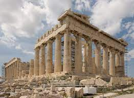
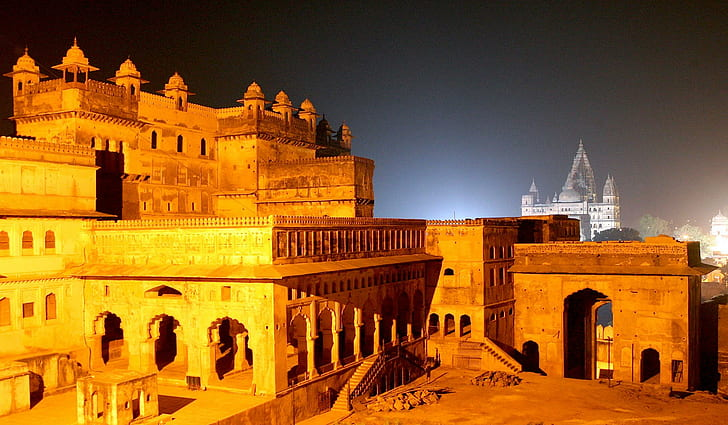

Ancient Roman Architeture
Posted on 01.01.2017 by Someone

Roman architects continued to follow the guidelines established by the classical orders the Greeks had first shaped: Doric, Ionic, and Corinthian. The Corinthian was particularly favoured and many Roman buildings, even into Late Antiquity, would have a particularly Greek look to them. The Romans did, however, add their own ideas and their version of the Corinthian capital became much more decorative, as did the cornice - see, for example, the Arch of Septimius Severus in Rome (203 CE). The Romans also created the composite capital which mixed the volute of the Ionic order with the acanthus leaves of the Corinthian. The Tuscan column was another adaptation of a traditional idea which was a form of Doric column but with a smaller capital, more slender shaft without flutes, and a moulded base. The Tuscan column (as it came to be known in the Renaissance period) was especially used in domestic architecture such as peristyles and verandahs. The Romans also favoured monolithic columns rather than the Greek approach of using several drums stacked on top of each other.
Ancient Greek Architeture
Posted on 01.01.2017 by Someone
There are five orders of classical architecture - Doric, Ionic, Corinthian, Tuscan, and Composite - all named as such in later Roman times. Greek architects created the first three and hugely influenced the latter two which were composites rather than genuine innovations. An order, properly speaking, is a combination of a certain style of column with or without a base and an entablature (what the column supports: the architrave, frieze, and cornice). The earlier use of wooden pillars eventually evolved into the Doric column in stone. This was a vertical fluted column shaft, thinner at its top, with no base and a simple capital below a square abacus. The entablature frieze carried alternating triglyphs and metopes. The Ionic order, with origins in mid-6th century BCE Asia Minor, added a base and volute, or scroll capital, to a slimmer, straighter column. The Ionic entablature often carries a frieze with richly carved sculpture. The Corinthian column, invented in Athens in the 5th century BCE, is similar to the Ionic but topped by a more decorative capital of stylized acanthus and fern leaves. These orders became the basic grammar of western architecture and it is difficult to walk in any modern city and not see examples of them in one form or another.
Ancient Indian Architeture
Posted on 01.01.2017 by Someone
Mughal architecture is a distinct Indo-Islamic architectural style that evolved in Northern and central India from the 16th to the 18th century under the patronage of Mughal emperors. It’s a stunning symmetrical and decorative style of Persian, Turkish, and Indian architecture. Some of the most unforgettable Mughal architecture was created during Akbar the Great’s reign (1556-1605) and under the vision of Shah Jahan (1628-1658). Many palaces, mosques, gardens, and mausoleums were built by Akbar the Great. His architecture is notable for the use of sandstone on a grand scale, as well as vast enclosed courtyards and doomed shallow prayer halls. One of Akbar’s most stellar achievements was the construction of his father Humayun’s tomb in Delhi. Humayun’s Tomb, commissioned by Humayun’s wife in 1562 and designed by a Persian architect, was the first garden tomb on the Indian subcontinent and the first building to use red sandstone on such a large scale. It is the first building in India to use the Persian double dome with an outer layer supporting the white marble exterior, a previously unseen material. This decorated facade style was a significant contribution to Mughal architecture in the future.